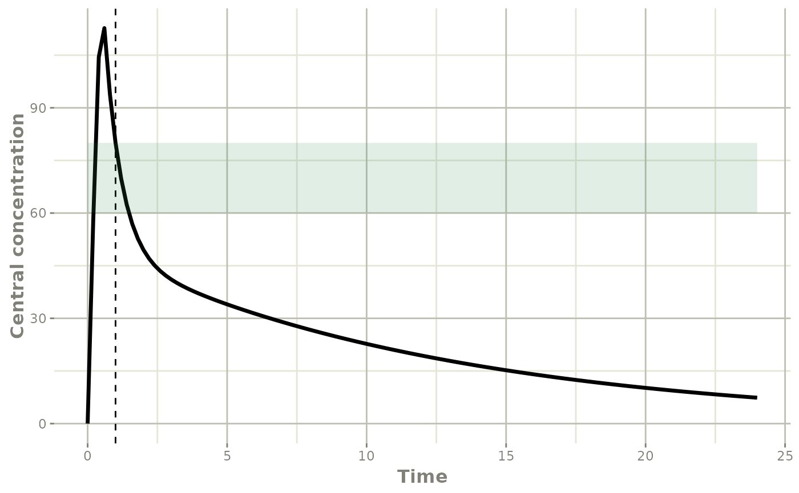
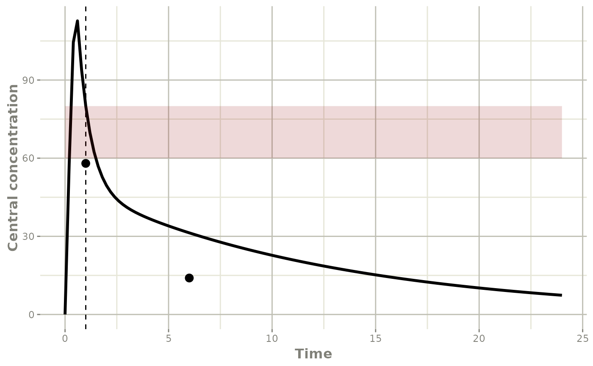
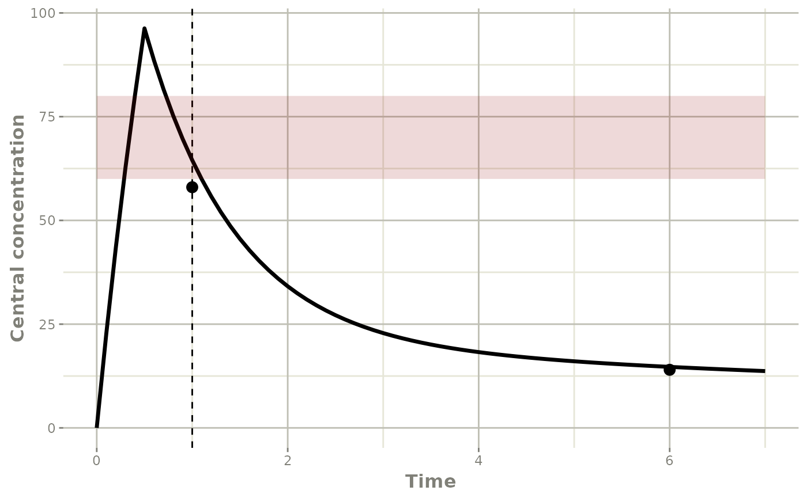
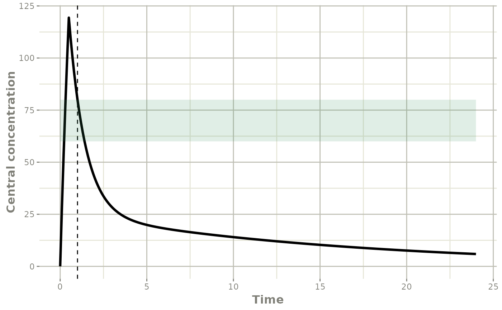
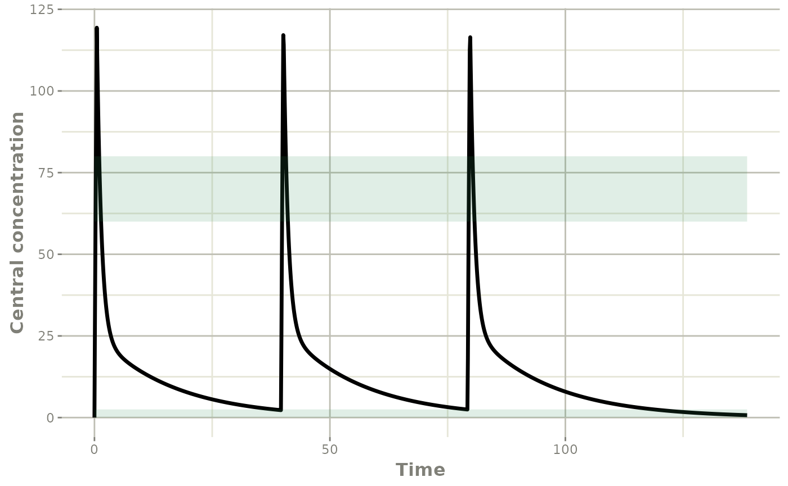

vignettes/case_study_amikacin.Rmd
case_study_amikacin.RmdThis case study presents the dosage adjustment for a critical care patient treated with amikacin for suspected ventilator-associated pneumonia, using the population pharmacokinetic (ppk) model of Burdet et al. mod_amikacin_2cpt_Burdet2015.
Before the first administration, no concentration information is available. The patient record contains only the information required to fill in the covariates of the model, see help("mod_amikacin_2cpt_Burdet2015").
df_patientA_prior <- data.frame(ID=1,TIME=0,
DV=0,
EVID=0,
AMT=0,
CLCREAT4H=50,TBW=62,PoverF=169)
df_patientA_prior
#> ID TIME DV EVID AMT CLCREAT4H TBW PoverF
#> 1 1 0 0 0 0 50 62 169The posologyr() function combines the patient record and the ppk model into a single object.
patA_prior_amik <- posologyr(mod_amikacin_2cpt_Burdet2015,df_patientA_prior)In the absence of measured concentrations, the optimal dose in mg to achieve a so-called peak concentration of 80 mg/l (one hour after the start of the 30-minute infusion) is determined from the typical profile of the ppk model.
prior_dose <- poso_dose_ctime(patA_prior_amik,time_c = 1,duration = 0.5,target_conc = 80)
prior_dose
#> [1] 2087.669With this dose, the time in hours required to reach a target Cmin concentration of 2.5 mg/l can be estimated.
prior_timecmin <- poso_time_cmin(patA_prior_amik,dose = prior_dose,target_cmin = 2.5)
prior_timecmin
#> [1] 37.3An event table is created to simulate the selected dosage with RxODE.
# infusion of prior_dose mg over 0.5 hours at time 0
event_table_priordose <- RxODE::et(time=0,amt=prior_dose,dur=0.5)
event_table_priordose$add.sampling(seq(0,24,by=0.2))By setting n_simul = 0, the poso_simu_pop() function produces an RxODE model that incorporates typical population parameter values and individual covariates from the patient record.
prior_param_patA <- poso_simu_pop(patA_prior_amik,n_simul = 0)$model$params
prior_dose_model_patA <- RxODE::rxSolve(object=patA_prior_amik$ppk_model,
params=prior_param_patA,
events=event_table_priordose)The resulting model is plotted with an horizontal ribbon showing the 60-80 mg/l target intervall of 1 h peak concentration, and a vertical dashed line marking 1 hour.
plot(prior_dose_model_patA,Cc) +
ggplot2::ylab("Central concentration") +
ggplot2::geom_vline(xintercept=1, linetype="dashed") +
ggplot2::geom_ribbon(ggplot2::aes(ymin=60, ymax=80),
fill="seagreen",show.legend = FALSE, alpha=0.15)
For a patient with a pharmacokinetic profile typical of the model population, the selected dose meets the peak concentration target.
After the first administration, the dosage selection can be refined using the results of therapeutic drug monitoring (TDM). The new data are added to the patient file, see vignette("patient_data_input") for more details.
df_patientA_tdm <- data.frame(ID=1,TIME=c(0,0.5,1,6),
DV=c(NA,NA,58,14),
EVID=c(10101,10101,0,0),
AMT=c(4160,-4160,0,0),
CLCREAT4H=50,TBW=62,PoverF=169)
df_patientA_tdm
#> ID TIME DV EVID AMT CLCREAT4H TBW PoverF
#> 1 1 0.0 NA 10101 4160 50 62 169
#> 2 1 0.5 NA 10101 -4160 50 62 169
#> 3 1 1.0 58 0 0 50 62 169
#> 4 1 6.0 14 0 0 50 62 169The updated patient record and the ppk model are combined into a single object by posologyr().
patA_tdm_amik <- posologyr(mod_amikacin_2cpt_Burdet2015,df_patientA_tdm)The observation from TDM are taken from the patient record, and renamed to match the plot of the prior dose model.
indiv_obs <- patA_tdm_amik$tdm_data[,c("DV","TIME")]
names(indiv_obs) <- c("value","time")
plot(prior_dose_model_patA,Cc) +
ggplot2::ylab("Central concentration") +
ggplot2::geom_point(data=indiv_obs, size= 3, na.rm=TRUE) +
ggplot2::geom_vline(xintercept=1, linetype="dashed") +
ggplot2::geom_ribbon(ggplot2::aes(ymin=60, ymax=80),
fill="red4",show.legend = FALSE, alpha=0.15)
The observations are not close to the a priori population profile. The target peak concentration was not met.
The individual maximum a posteriori (MAP) invidual parameter are estimated.
patA_map <- poso_estim_map(patA_tdm_amik)
patA_map
#> $eta
#> ETA_Cl ETA_Vc ETA_Vp ETA_Q
#> 0.4692508 0.3065970 0.7506494 -0.1295555
#>
#> $model
#> ▂▂▂▂▂▂▂▂▂▂▂▂▂▂▂▂▂▂▂▂▂▂▂▂▂▂▂▂▂▂ Solved RxODE object ▂▂▂▂▂▂▂▂▂▂▂▂▂▂▂▂▂▂▂▂▂▂▂▂▂▂▂▂▂
#> ── Parameters ($params): ───────────────────────────────────────────────────────
#> THETA_Cl CLCREAT4H THETA_Vc TBW PoverF THETA_Vp
#> 4.3000000 50.0000000 15.9000000 62.0000000 169.0000000 21.4000000
#> THETA_Q ETA_Cl ETA_Vc ETA_Vp ETA_Q
#> 12.1000000 0.4692508 0.3065970 0.7506494 -0.1295555
#> ── Initial Conditions ($inits): ────────────────────────────────────────────────
#> centr periph AUC
#> 0 0 0
#> ── First part of data (object): ────────────────────────────────────────────────
#> # A tibble: 2 x 16
#> time TVCl TVVc TVVp TVQ Cl Vc Vp Q ke k12 k21 Cc
#> <dbl> <dbl> <dbl> <dbl> <dbl> <dbl> <dbl> <dbl> <dbl> <dbl> <dbl> <dbl> <dbl>
#> 1 1 3.04 12.9 21.4 12.1 4.86 17.6 45.3 10.6 0.277 0.605 0.234 64.5
#> 2 6 3.04 12.9 21.4 12.1 4.86 17.6 45.3 10.6 0.277 0.605 0.234 14.7
#> # … with 3 more variables: centr <dbl>, periph <dbl>, AUC <dbl>
#> ▂▂▂▂▂▂▂▂▂▂▂▂▂▂▂▂▂▂▂▂▂▂▂▂▂▂▂▂▂▂▂▂▂▂▂▂▂▂▂▂▂▂▂▂▂▂▂▂▂▂▂▂▂▂▂▂▂▂▂▂▂▂▂▂▂▂▂▂▂▂▂▂▂▂▂▂▂▂▂▂The individual pharmacokinetic profile is plotted using the RxODE model provided by the poso_estim_map() function.
map_model_patA <- patA_map$model
map_model_patA$time <- seq(0,24,by=0.2)
plot(map_model_patA,Cc) +
ggplot2::ylab("Central concentration") +
ggplot2::geom_point(data=indiv_obs, size= 3, na.rm=TRUE) +
ggplot2::geom_vline(xintercept=1, linetype="dashed") +
ggplot2::geom_ribbon(ggplot2::aes(ymin=60, ymax=80),
fill="red4",show.legend = FALSE, alpha=0.15)
The MAP profile matches the observations.
With the MAP estimates of the individual parameters, the prediction of the time in hours needed before reaching the target Cmin can be updated.
map_timecmin_priordose <- poso_time_cmin(patA_tdm_amik,dose = prior_dose,target_cmin = 2.5)
map_timecmin_priordose
#> [1] 34.4An optimal a posteriori dose to achieve a peak concentration of 80 mg/l is determined using the MAP estimates.
map_dose <- poso_dose_ctime(patA_tdm_amik,time_c = 1,duration = 0.5,target_conc = 80)
map_dose
#> [1] 2578.836The time required to reach a Cmin of 2 mg/L after a single administration is determined using the MAP estimates.
map_timecmin <- poso_time_cmin(patA_tdm_amik,dose = map_dose,target_cmin = 2)
map_timecmin
#> [1] 41.5
event_table_mapdose <- RxODE::et(time=0,amt=map_dose,dur=0.5)
event_table_mapdose$add.sampling(seq(0,24,by=0.2))
map_param_patA <- patA_map$model$params
map_dose_model_patA <- RxODE::rxSolve(object=patA_tdm_amik$ppk_model,
params=map_param_patA,
events=event_table_mapdose)
plot(map_dose_model_patA,Cc) +
ggplot2::ylab("Central concentration") +
ggplot2::geom_vline(xintercept=1, linetype="dashed") +
ggplot2::geom_ribbon(ggplot2::aes(ymin=60, ymax=80),
fill="seagreen",show.legend = FALSE, alpha=0.15)
event_table_mapdose_ss <- RxODE::et(amt=map_dose,dur=0.5,ii=map_timecmin,addl=2)
event_table_mapdose_ss$add.sampling(seq(0,3.5*map_timecmin,by=0.1))
map_dose_model_patA_ss <- RxODE::rxSolve(object=patA_tdm_amik$ppk_model,
params=map_param_patA,
events=event_table_mapdose_ss)
plot(map_dose_model_patA_ss,Cc) +
ggplot2::ylab("Central concentration") +
ggplot2::geom_ribbon(ggplot2::aes(ymin=60, ymax=80),
fill="seagreen",show.legend = FALSE, alpha=0.15) +
ggplot2::geom_ribbon(ggplot2::aes(ymin=0, ymax=2.5),
fill="seagreen",show.legend = FALSE, alpha=0.15)